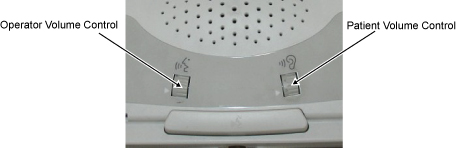

Adjusting the intercom for the Global Operator Cabinet (GOC) audio assembly
Adjust the minimum and maximum volume of the keyboard speaker (patient’s voice) and the maximum volume of the patient speaker (operator's voice).
Prerequisites
Personnel requirements
Required Persons
Preliminary Requirements
Procedure
Finalization
2
10 minutes
30 minutes
10 minutes
Tools and test equipment
Item
Quantity
Part Number
Manufacturer
Nonmagnetic Titanium Service Tool Kit, Large Set
1
5112581
-
Safety
Before working in any GE HealthCare MR suite or doing any GE HealthCare service procedure, you must:
Have read and understood all hazard conditions and safety requirements in the latest revision of the GE HealthCare MR Service Safety Manual (5452735).
Have successfully completed all relevant GE HealthCare Environmental Health and Safety (EHS) courses (or for non-GE HealthCare employees, equivalent workplace training courses).
Comply with all site-specific training and workplace safety requirements.
If you have any safety concerns at any time, do not begin work or immediately stop work and move to a safe location. Immediately contact your supervisor or site safety officer for instructions on how to proceed.
About this task
The following volume adjustments are made on the Scan Control and Intercom Module (SCIM).
Figure 1. SCIM volume controls

Operator Volume Control
Controls the speaker volume in the bore (operator’s voice).
Patient Volume Control
Controls the volume of the speaker from the keyboard (patient’s voice).
The following volume adjustments are made on the GOC Audio Assembly (GOCAA):
Figure 2. GOCAA volume controls
OCSPK MAX (R28)
Maximum SCIM/keyboard speaker volume R28 (patient’s voice)
Maximum patient speaker volume R67 (operator’s voice)
Note The minimum patient speaker volume is fixed; there is no adjustment for it. Do not adjust AUTOVOICE VOL (R32) or HELP BEEP VOL (R52) (used only for Profile5).
Procedure
Advance the cradle from the Home location 1000 mm onto the bridge.
Press Landmark, then Advance to Scan to position the cradle in the bore.
Remove the GOC service cover and disconnect the ground cable.
Figure 3. Removing the GOC service cover and disconnecting the ground cable
Remove the two screws.
Lift up and remove the service cover.
Disconnect the ground cable.
Temporarily relocate the SCIM from the operator’s table to a location as close to the GOCAA as possible, so that the person doing the adjustments can clearly hear the sound from the SCIM speaker.
Note Choose the correct adjustment step from the following steps, based on the checks that have been done prior. It might not be necessary to do all three adjustments.
Adjust the maximum SCIM/keyboard speaker volume (R28) - patient's voice.
Adjust the patient volume control on the SCIM to the maximum setting by rotating the volume wheel Up with your finger.
Set R28 to the factory ideal location.
Rotate R28 control counterclockwise until an audible clicking sound is heard at the minimum location, then advance control clockwise 12.5 turns from the minimum location. If successful, skip to Step c.
If an R28 clicking sound cannot be heard, rotate R28 control counterclockwise at least 30 turns to reach the minimum location, then advance control clockwise 12.5 turns to the factory ideal location.
While one person speaks into the patient microphone in the magnet bore, the second person should adjust R28 on the GOCAA to set the desired maximum SCIM/keyboard speaker volume.
This is an iterative process. Repeat the voice test until the maximum desired level is achieved.
Adjust the minimum SCIM/keyboard speaker volume (R13) – patient’s voice.
Adjust the patient volume control on the SCIM to the minimum setting by rotating the volume wheel Down with your finger.
Set R13 to the factory ideal location.
Rotate R13 control counterclockwise until an audible clicking sound is heard at the minimum location, then advance control clockwise 6 turns from the minimum location. If successful, skip to Step c.
If an R13 clicking sound cannot be heard, rotate R13 control counterclockwise at least 30 turns to reach the minimum location, then advance control clockwise 6 turns to the factory ideal location.
While one person speaks into the patient microphone in the magnet bore, the second person should adjust R13 on the GOCAA to set the desired minimum SCIM/keyboard speaker volume.
Adjust the maximum patient speaker volume (R67) - operator's voice.
Make sure that the magnet room door is open, so that the person at the SCIM making the adjustment can hear the comments from the person listening at the rear of the magnet.
Adjust the operator volume control on the SCIM to the maximum setting by rotating the volume wheel Up with your finger.
Set R67 to the factory ideal location.
Rotate R67 control counterclockwise until an audible clicking sound is heard at the minimum location, then advance control clockwise 9 turns from the minimum location. If successful, skip to Step d.
If an R67 clicking sound cannot be heard, rotate R67 control counterclockwise at least 30 turns to reach the minimum location, then advance control clockwise 9 turns to the factory ideal location.
While one person listens to the patient speaker at the rear of the magnet and provides information about the volume and sound quality, the second person should speak into the SCIM microphone and adjust R67 on the GOCAA to set the desired maximum patient speaker volume.
Set the operator volume to 4 and make sure that there is no howling sound (feedback) heard at the patient speaker. If there is a howling sound (feedback), slowly rotate R67 counterclockwise until howling stops.
Return the SCIM back to the operator’s table in front of the keyboard, if it was moved earlier.
Reconnect the ground cable and secure the service cover back in place.
Do a Head and Body scan to make sure of the functionality of the system.